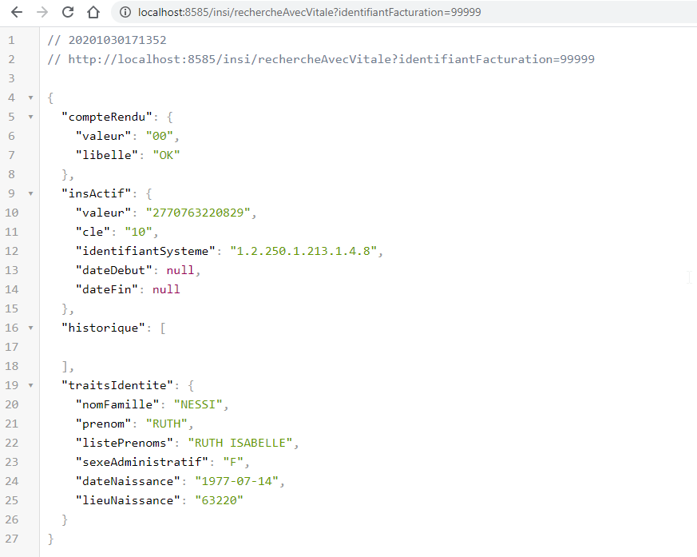
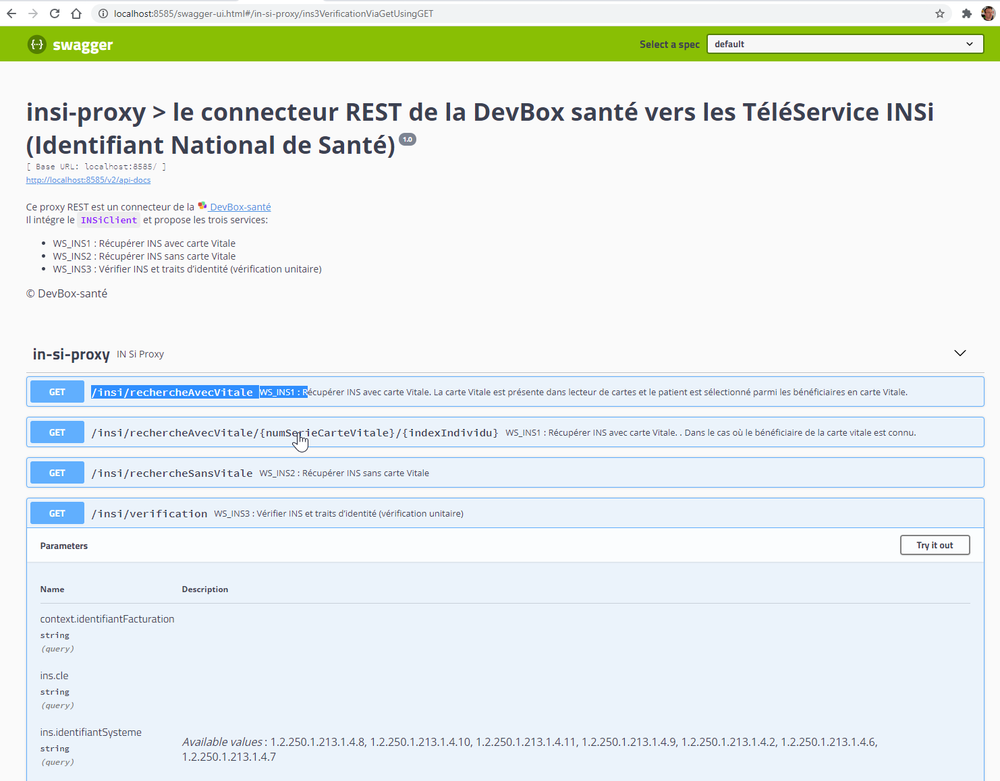

REST Proxy
Le module insi-proxy, permet de fournit une facade REST à la facade INSiClient java.
Toutes les opérations offertes par la la façade java sont disponibles via des appels http sur le poste local.
L’accès a l’insi-proxy est donc indépendant de la technologie utilisée par l’intégrateur. Exemple d’intégration possible :
!include https://bitbucket.org/devbox-sante/plantuml/raw/current/themes/theme-devbox-sante.puml
node "Poste Client (Windows/Mac/Linux)" {
[FrontEnd intégrateur] as frontend
package "DevBox-Santé" DEVBOX_COLOR {
component "DevBoxSanté INSi" as insFacade INS_COLOR {
[DevBoxSanté CPS] as cps CPS_COLOR
[DevBoxSanté Vitale] as vitale VITALE_COLOR
}
}
[Cryptolib CPS (ANS / ASIP)] as cryptolibCPS
[APILectureVitale (SesamVitale)] as apiLectureVitale
}
cloud "Téléservice **INSi** (SesamVitale)" as insi
[BackEnd intégrateur] as backend
frontend -u-> backend : REST
frontend -down-> insFacade : HTTP GET /insi/rechercheAvecVitale
cps <-down-> cryptolibCPS : appel natif
vitale <-down-> apiLectureVitale : appel natif
insFacade <-d-> insi : SOAP
Installation du Proxy
Procédure :
- Doit être installé environnement Java 11 ou supérieur
- Télécharger le proxy-rest mis à disposition
Lancement
Le livrable s’agit d’un jar exécutable, qui se lance de la manière suivante
java -jar insi-proxy-rest-*.jar
Le composant est accessible depuis le poste local en HTTP sur l’adresse ip 127.0.0.1 avec un numéro de port configurer par défaut :
- mode de sécurité cps : 8484
- mode de sécurité p12 : 8485
- mode de sécurité p12s : 8486
Afin de valider le fonctionnement, ouvrir un navigateur à l’adresse suivante : http://127.0.0.1:PORT

Intégration
L’ensemble des requêtes sont documentées via l’interface swagger et sont accessibles sur l’url suivante : http://127.0.0.1:PORT/swagger-ui.png

Configuration
Les paramètres de configuration du composant DevBox-santé INSi se réalise dans le fichier application.yml.
Outre les configurations liées à la sécurité et le port HTTP utilisé, la configuration est identique à celle du mode embedded.
Utilisation de l’installer DevBox-Santé
La DevBox Santé propose des solutions de “packaging” des différents modules, pour Windows, MacOS et Linux.
Pour tester ces solutions Contactez-nous